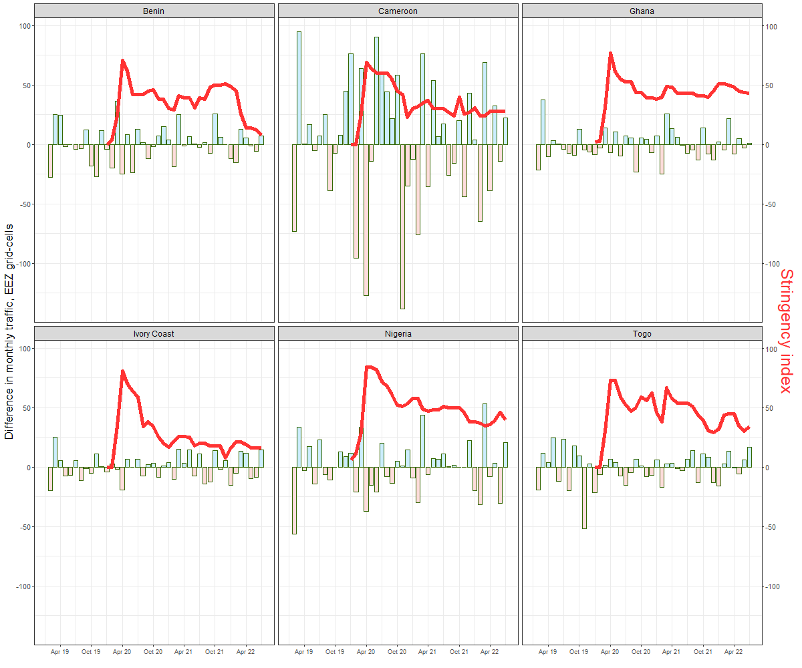
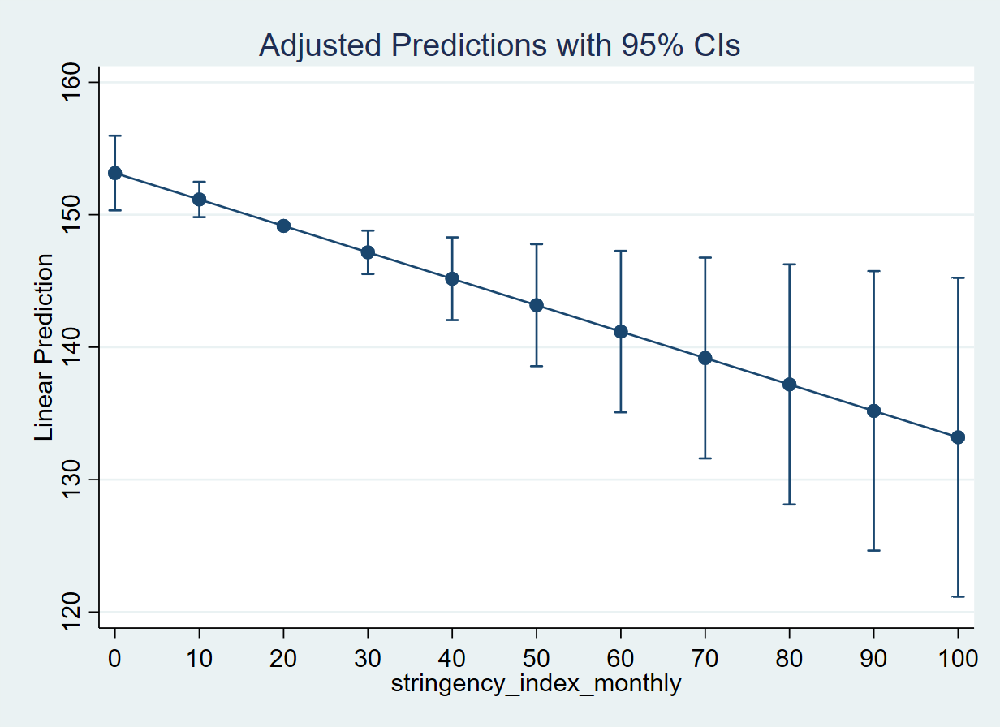

Explore
November 7, 2022
Aggregating ship traffic across grid-cells: We now have grid-cell level AIS data merged with COVID stringency index. A potential problem is that our unit of analysis is grid-cell level and aggregating the changes in grid-cells in a country’s EEZ is slightly problematic. This is because, Nigeria, a country which has much larger EEZ has a number of grid-cells with very low or no traffic, but Cameroon, which has smaller EEZ has most of the grid-cells with much higher traffic. So, although there are grid-cells in Nigeria that have much higher traffic, averaging them across all Nigerian grid-cells makes the figure low, compared to say traffic in Cameroon EEZ grid-cells. [As shown below]
Month: August 2014

Also, restrictions may not affect the vessel mobility of cargo ships as much as passenger ships. And, if majority of ships in Nigeria are oil trafic, then they may not be affected as much as in, say traffic in Europe. This is one reason we need to disaggregate traffic by “type” (next analysis topic).
Stringency and Traffic
In the following, I have averaged cumulative count of monthly traffic across all grid-cells in a country’s EEZ.
Stringency Index and Monthly lag difference in traffic
Another approach to check the traffic in each grid-cell is to see the difference in traffic from one month to next. This is done in two steps:
For each grid-cell in a country’s EEZ, find the difference in traffic. For instance, if a grid-cell had 100 unique vessels last month, and 80 this month, then the difference would be -20.
Average the difference across all grid-cells in a country’s EEZ to create the country’s average monthly difference in vessel movements.
The figure below shows the difference in shipping movements, in each country, as well as the monthly stringency index.

STATA Output
xtreg cum_n_vessels stringency_index_monthly if year>2018 & year<2023, fe vce(cluster gid) margins, at(stringency_index_monthly = (0(10)100)) atmeans marginsplot
Below is the result from a simple stata command (above) to explore how monthly stringency index explains cumulative count of vessels in monthly grid-cell.
From the Gulf of Guinea data, we find that on average, when a country increases stringency level from 0 to 50, there are 10 less vessels in a grid-cell month. This is substantive decline given that the mean of traffic in all Gulf of Guinea grid-cells is 84.
